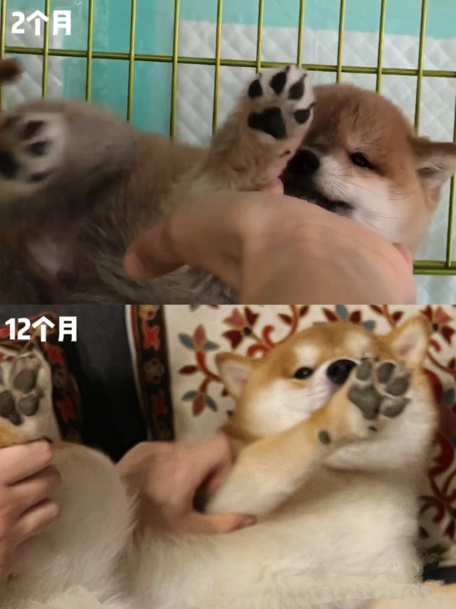
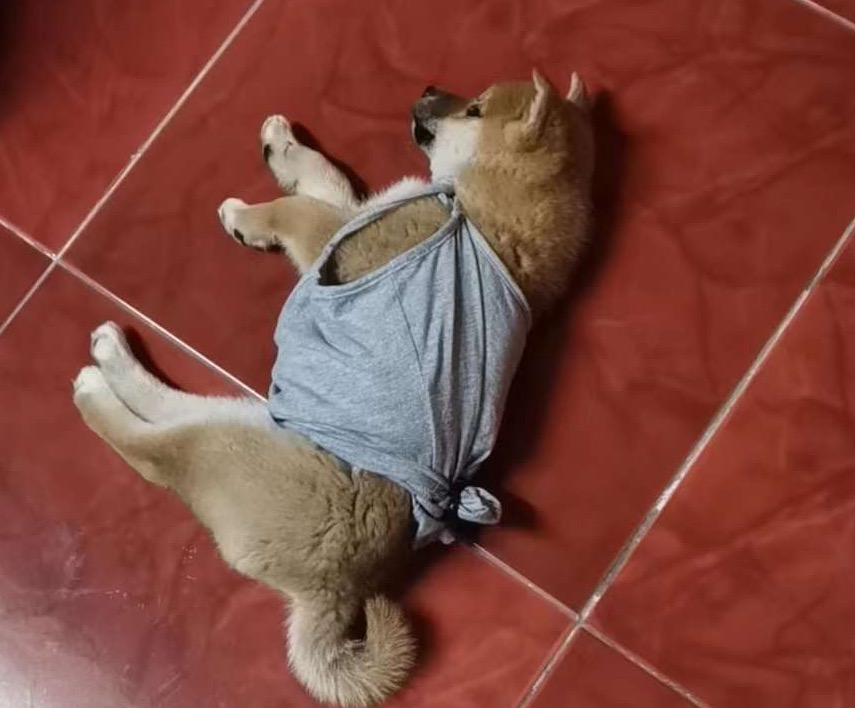
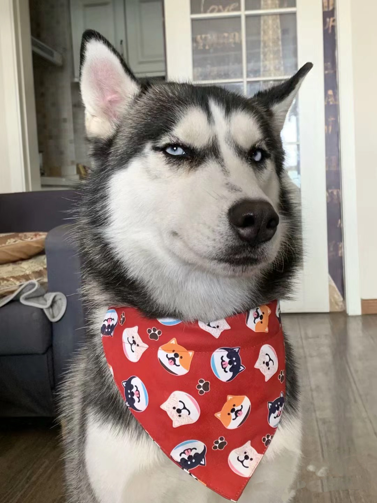

Bacon Q Dog

Bacon Q. Dog is a 9yr old labradoodle. He prefers to spend his days lounging among the three different beds/couches that his family has gifted him. He enjoys a walk or two around the neighborhood, as long as he can pretend that he doesn't see any of the other animals to avoid the embarrassment of not wanting to admit he has no wolf-like skills in chasing them.
At night just as the rest of the family is ready to relax, Bacon suddenly wants to release all of his energy. He will place his toys on a mini couch and frantically drag the couch around, giving his toys "a ride." There is also a lot of rolling. Lots and lots of rolling.
Photo Gallery


Likes
- Belly rubs
- Playing tug-of-war
- Sneaking onto the couch
Pancake Dog
Pancake is 1.5yr old Japanese Shibai lnu. He prefers hanging out.
He is a dog who likes to catch bugs and play with them. When he sees bugs, he goes after them.
Photo Gallery
 Sixteen Cat
Sixteen is a 1yr old English longhair kitten. She prefers to spend her days sleeping.
At mid night just as everyone has fallen into sleep, Sixteen suddenly wants to release all of her energy. She will run across every room and pretend to hunt her toys.
Photo Gallery
Buble Dog
Buble is a 3yr old husky. She prefers to runninf on the grass.
She cannot wait to go out everytime when the family members finish the dinner
Photo Gallery
Cream Cat
Cream is a 1yr old Ragdoll cat. She loves sleeping and eating chicken breast.
Cream loves to play the balls with the family member.
Photo Gallery
MOMO Dog
MOMO is a 3yr old Cocker Spaniel. She loves run across the room to play the ball.
MOMO loves to wear different clothes.
Photo Gallery
Apple Cat
Apple is a 4yr old Devon Rex cat. She is very energetic and loves running.
Apple loves to go out by car.